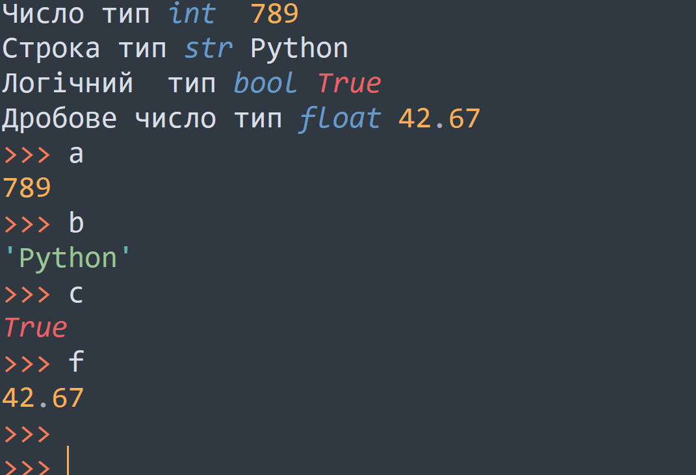
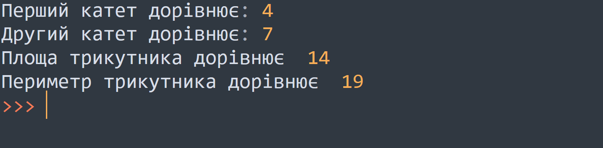

Тема 2.
Змінні і типи даних в Python
Теорія
Завдання
Завдання №1
Вивести на екран типи даних(int,string,bool,float) по черзі за допомогою print();

Завдання №2
Знайти площу та периметр прямокутного трикутника. Вводячи з клавіатури два катети а і b, а гіпотенузу с знайти за формулою. с**2=a**2+b**2 Площа S = (a * b)/ 2 Периметр P = a + b + c. Результат заокруглити використовуючи функцію round().
